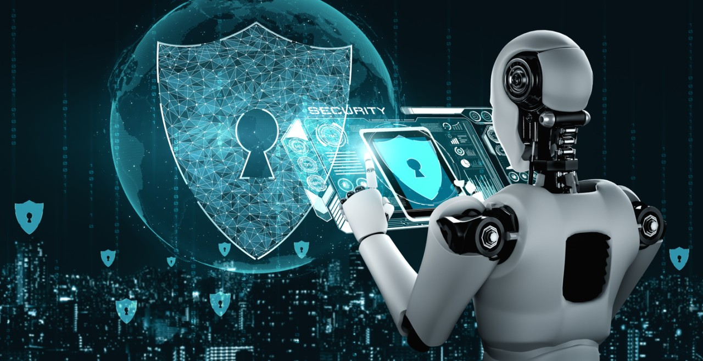
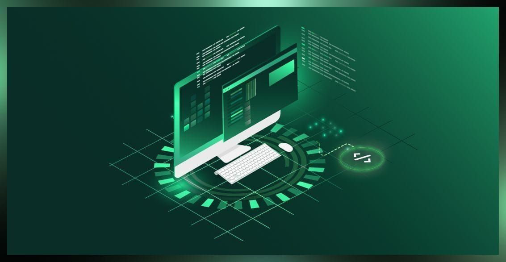
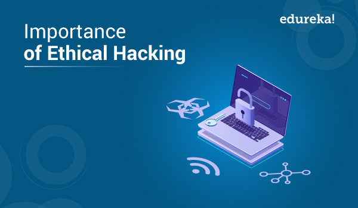

Blog Post Title 1
Published on January 1, 2023
With the increasing complexity of cyber threats, AI is becoming a game-changer in cybersecurity. Machine learning algorithms can detect anomalies, identify potential attacks, and automate responses faster than traditional methods. However, cybercriminals are also using AI to develop more sophisticated attacks. This ongoing battle between AI-driven defense and AI-powered threats will shape the future of cybersecurity.. Read more...

Blog Post Title 2
Published on February 1, 2024
Open-source software has revolutionized the tech industry by fostering innovation and collaboration. Projects like Linux, Apache, and TensorFlow power many modern applications, proving that community-driven development can rival proprietary software. Companies benefit from transparency, security, and cost-effectiveness. As more businesses embrace open-source solutions, the future of software development will likely be more open and decentralized. Read more...

Blog Post Title 3
Published on March 1, 2025
In a world where cyber threats are increasing daily, ethical hackers play a crucial role in securing digital systems. By identifying and fixing vulnerabilities before malicious hackers can exploit them, ethical hacking helps protect sensitive data. Companies now recognize the need for penetration testing and bug bounty programs. As cybersecurity threats evolve, ethical hacking skills will be in even greater demand. Read more...